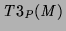
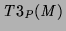
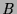
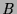

The  definition given earlier can be applied when negative
literals are present. It is equivalent to defining  to be the
interpretation such that the truth value for each atom
definition given earlier can be applied when negative
literals are present. It is equivalent to defining  to be the
interpretation such that the truth value for each atom  is the truth
value of  in
is the truth
value of  in  , where
, where
 is a head clause instance in
is a head clause instance in
 . In the presence of negation
. In the presence of negation  is generally not monotonic
with respect to
is generally not monotonic
with respect to  but is monotonic with respect to the information
measure and, unlike
but is monotonic with respect to the information
measure and, unlike  , at least one fixpoint exists and the
, at least one fixpoint exists and the
 -least fixpoint can be built using
-least fixpoint can be built using  [FittingFitting1985].
[FittingFitting1985].
For definite programs we introduced  , which essentially
overestimates the set of successful atoms. This is so even when negation
is present -- a negated inadmissible atom is inadmissible and hence
assumed to succeed (the negation makes no difference). When negation
is present it is helpful to also have an operator which underestimates
this set, by assuming inadmissible clause body instances fail:
, which essentially
overestimates the set of successful atoms. This is so even when negation
is present -- a negated inadmissible atom is inadmissible and hence
assumed to succeed (the negation makes no difference). When negation
is present it is helpful to also have an operator which underestimates
this set, by assuming inadmissible clause body instances fail:
As with  ,
,  generalises
generalises  and its fixpoints
include all those of
and its fixpoints
include all those of  and
and  .
.